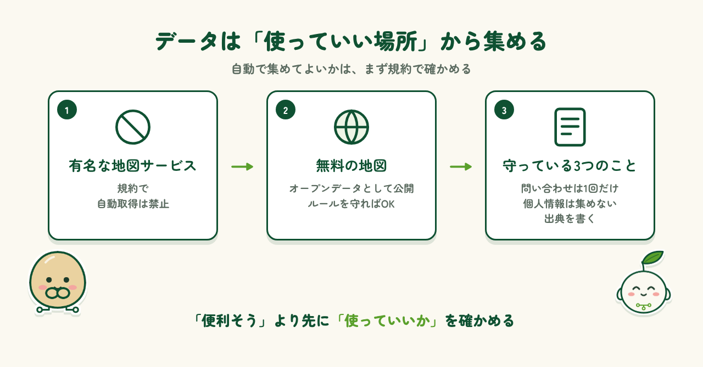
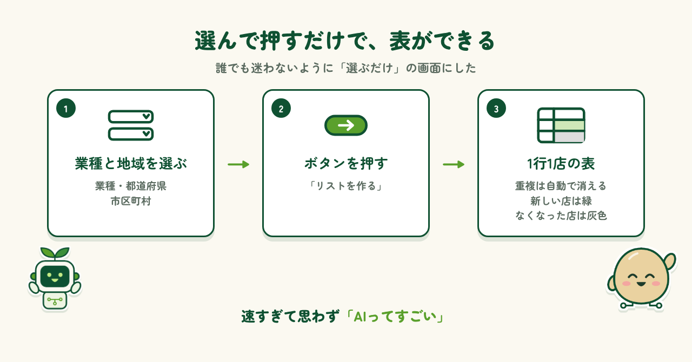
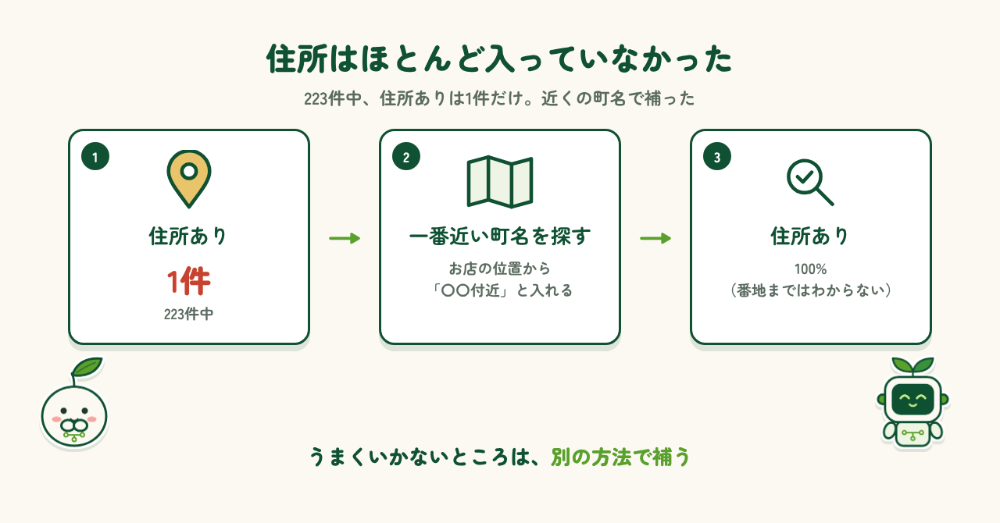
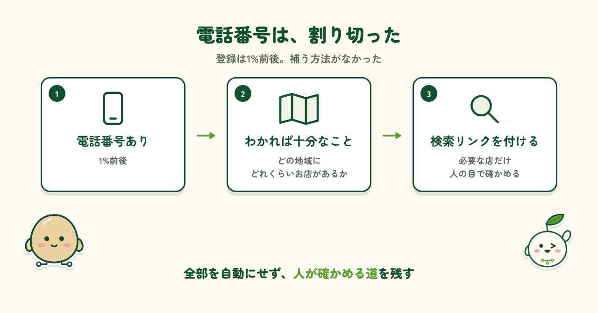
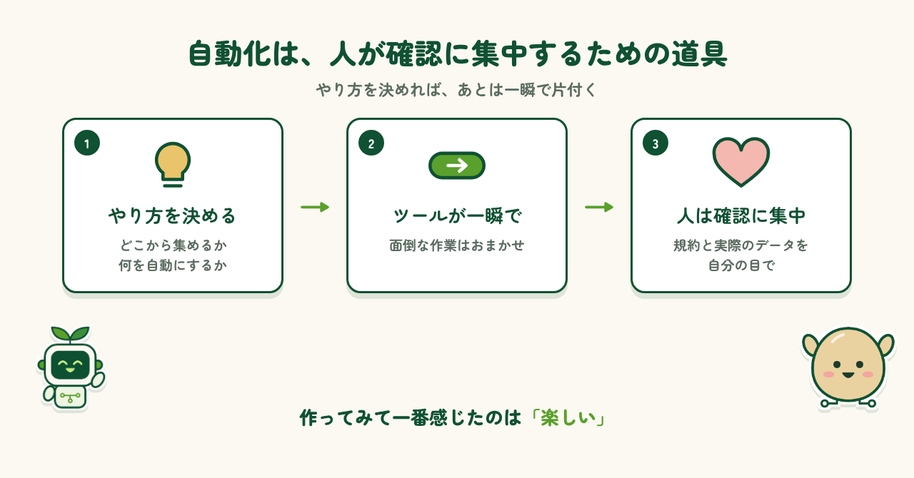

はじめに
お店の情報は、地図アプリ、ホームページ、口コミサイトとバラバラに載っています。店名はここ、住所はあそこ、電話番号はまた別のページ。以前から「一つの表にまとまっていたら便利なのに」と感じていました。とはいえ、手作業で1件ずつ調べてExcelに写すのは大変です。そこで、業種と地域を選ぶだけで店舗リストをExcelにまとめるツールを作りました。作るときに考えたことと、使ってわかったことを紹介します。
データ元選び：Googleマップは使えない
お店の情報といえばGoogleマップですが、利用規約でプログラムによる自動取得が禁止されています。それなら、違う手段を考えるしかありません。選んだのは、世界中のボランティアが作る無料の地図 OpenStreetMap です。データは「オープンデータ」として公開され、ルールを守れば自動取得も認められています。問い合わせは1回の実行で1回だけ、個人情報は集めない、Excelに出典を書く。この3つを守っています。

できたツール
使い方は、業種・都道府県・市区町村を選んで「リストを作る」を押すだけ。この「選ぶだけ」の画面は、誰でも迷わず使えるように私から提案した部分です。結果は1行1店のExcelにまとまり、重複は自動で消え、見つからない項目には「なし」と入ります。初めて動かしたときは、めちゃくちゃ早くて驚きました。思わず「AIってすごい」と笑ってしまいました。もう一度動かすと、新しい店は緑、なくなった店は灰色で表示されます。

わかったこと①：住所がほとんどない
岩手県盛岡市の「レストラン」で試すと、223件のリストができました。ところが、住所が入っていたのはたった1件（0.4%）。OpenStreetMapは店名と地図上の位置はよく登録されていますが、日本では住所まで入っている店が少ないのです。最初からうまくいかないよなあ、と思いつつ対策を考えました。お店の位置から一番近い町名を探し、「〇〇付近」と入れる方法です。これで住所の入力率は100%に。ただし番地まではわかりません。

わかったこと②：電話番号
もうひとつ困ったのが電話番号です。登録されている店は1%前後しかなく、補う方法もありませんでした。今の時代、電話番号はなかなか載せづらいでしょうし、しょうがないと思います。そこで今回は、「どの地域に、どれくらいの数のお店があるか」がわかれば十分と割り切りました。そのかわり、店名と地域で検索するリンクを列に付けて、必要な店だけ人の目で確かめられるようにしています。

作ってみての気づき
作り終えて一番感じたのは、「楽しい」ということです。どこからデータを集めるか、何を自動にして何を人が確かめるか。やり方をしっかり決めてしまえば、あとはツールが一瞬で片付けてくれて、すごく便利です。反対に、規約や実際のデータを確かめずに進めていたら、使えないツールになっていたかもしれません。自動化は人の作業をゼロにするものではなく、人が確認に集中するための道具だと思います。

まとめ
無料のオープンデータでも、規約を守りながら店舗リストの土台を自動で作れることがわかりました。うまくいかないところも含めて、作って、試して、育てていく。AI sodate lab では、これからもAIとITで「面倒」を「便利」にしていくことを続けていきます。ツールの詳しい内容は、WORKSの「店舗・企業リスト自動作成ツール」のページで紹介しています。
出典
地図データ：© OpenStreetMap contributors（ODbL）／市区町村・町名データ：Geolonia 住所データ（CC BY 4.0）
制作メモ
段落の構成と文章の下書きはAI（Claude）と作り、各段落に自分の感想を入れて、1段落ずつ確認・修正しました。数字はツールの実行結果と照らし合わせています。